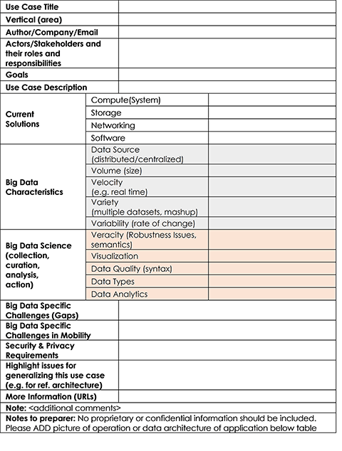
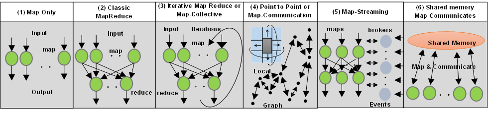

|
|
SPIDAL |

|
|
General Study of Big Data Applications As part of our research into Big Data and its potential benchmarks, we have gone about collecting relevant applications and their features, the key properties of which are summarized later. This also includes efforts to identify and classify requirements and compare them to the NIST Reference Architecture. Below you can view a copy of a template with 26 features used to record Big Data Applications in the NIST process. Piyush Mehrotra, division chief of the NASA Advanced Supercomputing division, has joined as co-chair on the project and will gather more NASA applications.

General Analysis of Features of Big Data Applications Through persistent research in this area we have identified around 50 salient features of Big Data (Ogres) and divided them into four views or dimensions: Problem Architecture (or Structure); Execution mode; Data Source, Storage and Access; and the Processing algorithms used. We in turn used this to match applications to suitable systems (hardware, software) and group applications together. Later work focused on understanding needed benchmarks by probing all facets of Big Data problems. Below you can see 6 System Architectures identified in the Ogre Problem Architecture Classification.

General Big Data Application Activity Further/Ongoing work:
|